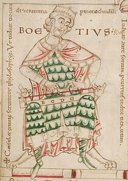

A Timeline of the Church
From Pentecost to the spread of Orthodoxy into North America. What came first, and what followed from it.
Primary Documents
Texts that shaped doctrine, worship, and law, from the first century to the nineteenth.
The Didache
The earliest surviving Christian manual, covering ethics, baptism, fasting, and the Eucharist. Written before much of the New Testament reached its final form.
The Nicene Creed
The foundational statement of Trinitarian faith, produced by the first two Ecumenical Councils. Still recited in the Divine Liturgy today.
The Apostolic Constitutions
A large compilation of early Church order, liturgy, and discipline. Presented under the name of the Apostles, though compiled centuries after them.
Corpus Juris Civilis
Emperor Justinian's great Byzantine legal code. Shaped civil and canon law across the Christian East for centuries, including its provisions on slavery and manumission.
The Philokalia
An anthology of Orthodox spiritual and ascetic writing spanning the 4th to 15th centuries, gathered by St. Nikodemos of the Holy Mountain and St. Makarios of Corinth.
The Rudder (Pedalion)
The standard Greek Orthodox compilation of canon law, gathering the canons of the Ecumenical Councils and the Fathers into one authoritative reference.
Scholars & Theologians
Not the ancient Fathers, the more recent voices who shaped how Orthodoxy explains itself to the modern world.

Fr. Georges Florovsky
Historian of doctrine. Coined "neopatristic synthesis," urging a return to the Fathers over Western scholastic categories.

Vladimir Lossky
Lay theologian. His Mystical Theology of the Eastern Church shaped how apophatic theology is explained to modern readers.

Fr. Alexander Schmemann
Liturgical theologian, Dean of St. Vladimir's Seminary. Best known for For the Life of the World.

Met. John Zizioulas
Theologian of personhood and communion. Author of Being as Communion.

Fr. John Meyendorff
Historian specializing in Byzantine theology, particularly the thought of St. Gregory Palamas.

Met. Kallistos Ware
Convert-scholar. Author of The Orthodox Church, one of the most widely read introductions to Orthodoxy in English.
Philosophers
Some famous, some far less so. Christian thinkers who engaged philosophy directly, not only theology.

St. Justin Martyr
Early apologist. Framed Christianity as the true philosophy, fulfilling the partial truths glimpsed by Greek thought.

Boethius
Roman statesman. Wrote The Consolation of Philosophy awaiting execution, carrying classical philosophy into the medieval Christian world.

St. John of Damascus
The last major Greek Father. Wrote the Fount of Knowledge and defended icons during Iconoclasm.

Michael Psellos
Byzantine polymath, far less known today. Revived the study of Plato in Constantinople and advised emperors.

St. Photios I
Patriarch and scholar. His writing against the Filioque remains a foundational text in that dispute.

Gemistus Pletho
Late Byzantine Neoplatonist, obscure to most readers today. His lectures in Florence helped spark Renaissance interest in Plato.
Orthodoxy and Slavery
A difficult chapter, presented as history rather than argument. The record is mixed, and it is worth knowing honestly.
Byzantine Law and the Church
Justinian's legal code regulated slavery rather than abolishing it, but built in specific paths to freedom. Manumission performed inside a church carried full legal force, and clergy could act as witnesses to it. Church buildings also functioned as places of sanctuary where an enslaved person could seek refuge.
An Early Voice Against the Institution Itself
St. Gregory of Nyssa, in his Homilies on Ecclesiastes in the 4th century, delivered one of the earliest outright condemnations of slavery as an institution, arguing that no price can be placed on a being made in the image of God. His position was exceptional for its time. It did not become official Church policy for many centuries afterward.
Serfdom in Russia
Slavery in the strict sense declined across the Byzantine world over the medieval period, but serfdom, a related system binding peasants to land, became deeply entrenched in Russia. The Russian Orthodox Church largely operated within that system rather than opposing it directly. Serfdom was formally abolished by Tsar Alexander II in 1861, a reform partly influenced by Christian moral argument circulating at the time.
Ottoman Rule and the Devshirme
Under Ottoman rule, Orthodox Christian communities in the Balkans and Anatolia were subject to the devshirme, a periodic levy of Christian boys conscripted into Ottoman military and administrative service, frequently converted to Islam in the process. A distinct experience from chattel slavery, but a major and painful part of Orthodox history between the 14th and 17th centuries.
Arguments for Classical Theism
Quick reference. Five of these are Aquinas' Five Ways specifically, the rest come from elsewhere. A few link to full essays already on this site.
The Argument from Motion
Everything in motion or change is being changed by something else. That series cannot regress forever, and needs an unmoved first cause.
The Argument from Efficient Cause
Nothing causes itself, that would mean existing before itself. Every effect traces back through a chain of causes that cannot regress forever without a first, uncaused cause.
The Cosmological Argument
Everything contingent needs an explanation outside itself. That chain cannot regress forever without landing on something that exists necessarily.
Read the full essayThe Argument from Degrees of Perfection
Calling one thing better, truer, or more noble than another assumes a standard of maximum goodness to measure against. That standard is what we call God.
The Teleological Argument
The universe's order, and the narrow physical constants that allow life at all, are better explained by a designing intelligence than by chance alone.
The Ontological Argument
An argument from pure logic. If a maximally great being's existence is even possible, its own definition requires that it actually exists.
The Moral Argument
Objective moral values need a standard beyond human opinion. Humans disagree too much to be that standard themselves.
Read the full essayArgument from Religious Experience
Direct experience of the divine is reported across cultures and centuries, with enough consistency to count as real evidence, not just noise.